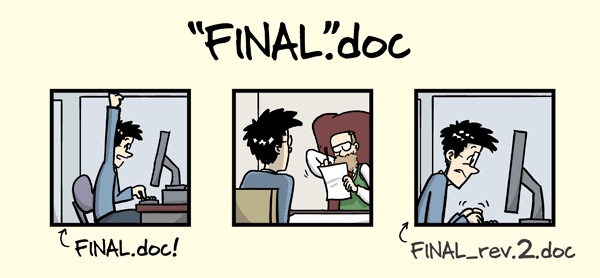

A full-semester course on
“Version control of code and data”
Lab Meeting of the Max Planck Research Group “NeuroCode” at the Max Planck Institute for Human Development Berlin and Research Group “Mechanisms of Learning and Change” at University of Hamburg


2023-08-29
Why we need version control …
… for code (text files) 
… for data (binary files) 
What is version control?
“Version control is a systematic approach to record changes made in a […] set of files, over time. This allows you and your collaborators to track the history, see what changed, and recall specific versions later […]” (Turing Way)
keep track of changes in a directory (a “repository”)
take snapshots (“commits”) of your repo at any time
know the history: what was changed when by whom
compare commits and go back to any previous state
work on parallel “branches” & flexibly “merge” them

{kind=link}
{kind=link}
“push” your repo to a “remote” location & share it
share repos on platforms like GitHub or GitLab
work together on the same files at the same time
others can read, copy, edit and suggest changes
make your repo public and openly share your work
{kind=link}
What are git and DataLad?
- most popular version control system
- free, open-source command-line tool
- graphical user interfaces exist, e.g., GitKraken
- standard tool for most (all?) software developers
- 100 million GitHub users 1
- “git for (large) data”
- free, open-source command-line tool
- builds on top of git and git-annex
- allows to version control arbitrarily large datasets 2
- graphical user interface exists: DataLad Gooey
Note: We will mainly focus on Git and only refer to DataLad as an outlook.
Thank you!
Funding & Support
People

(UHH & MPIB)
(UHH DDLitLab)